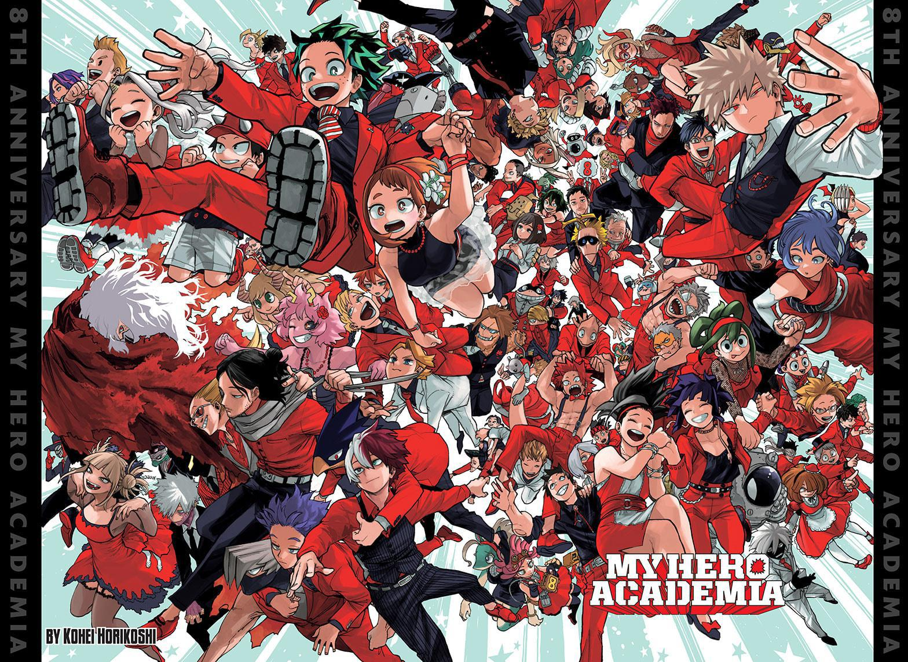

| Izuku | Hero | A quirkless boy, given powers by All Might. |
| Shigiraki | Villain | A boy born to touch the sky but cursed never to touch again |
| All Might | Hero | Symbol Of Peace |
| All For One | Villain | Most selfish man in the world |
| Ochacko | Hero | Girl who originally joined to make money, ends up wanting to help Toga come into the light |
| Himiko Toga | Villain | A girl born different, and was treated different, so she stayed different |
| Shoto Todoroki | Hero | Abused by his father and overcame it to be the hero he wanted to be |
| Touya Todoroki | Villain | Abused by his father and went off the rails when casted aside |
